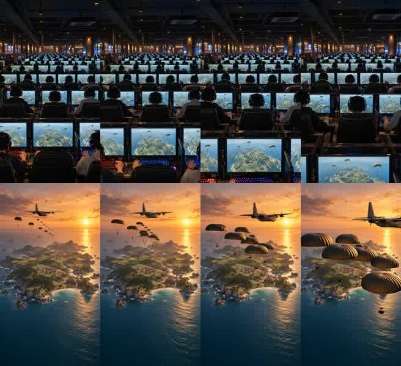
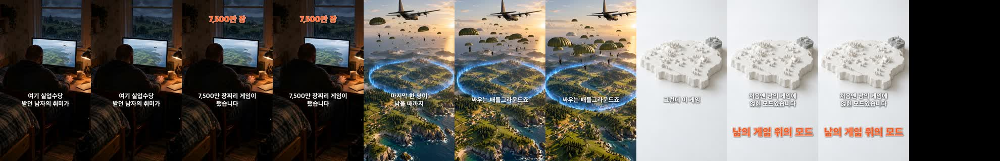
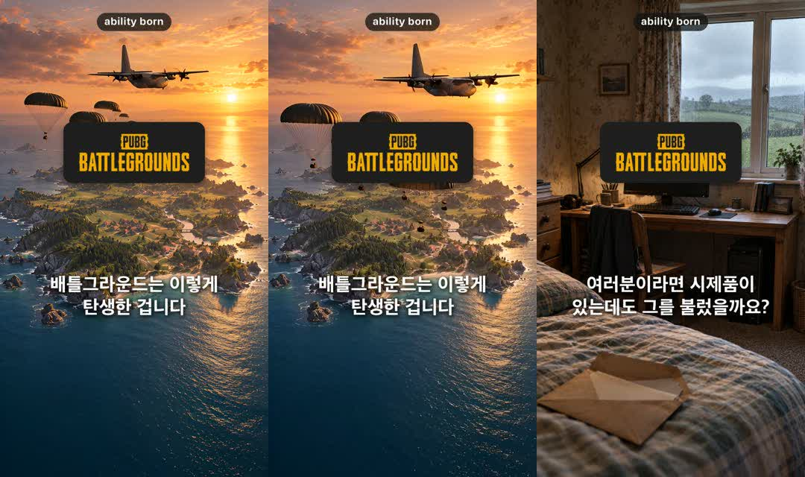

AI 다큐 쇼츠 한 편,
그림부터 업로드까지 47분
실화 다큐 쇼츠 채널 「능력의 탄생」이 한 편을 어떻게 만들고 올리는지, 오늘 올린 배틀그라운드 편의 실제 파일·시각·화면으로 정리했습니다.
먼저 결론
한 편은 사람이 고르고 확인하는 몇 군데만 빼면 명령 몇 개로 돕니다. 대신 사실 확인과 화면 검수는 사람이 꼭 봐야 합니다.
그림·영상·자막·업로드
컷 나누기부터 업로드·댓글까지 47분. 그림 20장, 영상 10개, 자막, 숫자 라벨, 로고, 유튜브·인스타 업로드를 스크립트가 처리합니다.
주제·대본·화면 확인
주제 고르기, 대본 승인, 그림과 영상 한 장씩 확인, 고정댓글 고정은 사람이 합니다. 오늘도 20컷 중 2컷을 확인 단계에서 바꾸거나 잘랐습니다.
사실·표시·대기 시간
자료마다 숫자가 다르면 그 숫자는 쓰지 않습니다. 업로드 때 AI 표시를 꼭 켜고, Grok 영상은 한 컷에 9분씩 기다리거나 실패하기도 합니다.
1. 한 편의 숫자
배틀그라운드 편은 80초, 20컷이고, 오후 3시 15분에 컷을 나누기 시작해 4시 2분에 두 곳 업로드를 마쳤습니다.
단계별 걸린 시간 (분)
막대 위에 마우스를 올리면 시각이 보입니다. 그림과 영상은 동시에 돌아서 합이 47분보다 큽니다.
표로 보기
읽을 점
- 가장 오래 걸린 건 AI 영상: 30분 중 대부분이 기다리는 시간입니다. 빠른 컷은 43초면 나오지만, 두 컷은 9분 가까이 기다렸습니다.
- 그림은 빠르고 안정적: 한 장에 32~80초, 20장 모두 다시 그리지 않았습니다.
- 업로드도 자동: 유튜브·인스타 각각 제목, 설명, 썸네일, AI 표시까지 스크립트가 넣습니다.
47분에 안 들어간 것
- 대본과 목소리: 10월 19일에 64편 대본과 목소리를 한꺼번에 미리 만들어 뒀습니다. 그래서 오늘은 컷 나누기부터 시작했습니다.
- 주제 고르기: 지난 편 조회수를 보고 후보 3개를 고른 뒤 사람이 하나를 정했습니다.
- 고정댓글 고정: 댓글은 자동으로 달고, 고정은 앱에서 손으로 합니다.
2. 전체 흐름 10단계
각 단계의 결과가 파일로 남아서, 어디서 멈춰도 그 파일부터 다시 이어 갑니다.
3. 대본은 공식대로
처음 6편의 조회수를 비교해서 만든 체크리스트를 매 편 그대로 지킵니다.
말투는 인기 다큐 쇼츠 채널을 참고했지만, 그 채널을 따라 한 것처럼 보이지 않게 대표 대사 두 개는 쓰지 않습니다.
배틀그라운드 편에서는
- 첫 문장: "여기 실업수당 받던 남자의 취미가 7,500만 장짜리 게임이 됐습니다."
- 반전: "그런데 이 게임, 처음엔 남의 게임에 얹힌 모드였습니다."
- 끝 질문: "여러분이라면 시제품이 있는데도 그를 불렀을까요?"
- 숫자 처리: 동시접속 기록이 기네스(323만 6,027명)와 회사 발표(325만)가 달라서 "300만 명 넘게"로만 말했습니다.
- 제목: 브랜드 이름은 빼고 모순 하나와 숫자 하나. "실업수당 받던 남자의 취미인데, 7,500만 장이 팔렸습니다"
4. 장면은 그림 지시문으로
20컷 그림을 ChatGPT가 그렸고, 실사·흰 모형·게임풍 세 가지 화풍을 섞었습니다.
지시문 구조
장소 블록을 빼면 엉뚱한 나라의 방이 나와서, 검사기가 컷마다 장소 블록이 있는지 막습니다.
AI에 맡기지 않는 것
- 글자와 숫자: 그림에는 글자를 넣지 않고, 자막·라벨·키워드는 합성 단계에서 코드로 얹습니다.
- 얼굴: 실존 인물은 늘 뒷모습이나 멀리서만.
- 실제 게임 화면·로고: 캐릭터·화면 표시·무기 금지. 로고는 끝에 공식 파일만 씁니다.
5. 검수에서 걸러낸 것
영상은 한 컷에 네 장면(0.3·2·4·5.8초)을 뽑아 보고, 사람 수가 늘었거나 글자가 생겼는지 확인합니다.

오늘 손본 컷과 검사 결과
- 탑승교 컷: Grok이 두 번 시간 초과. 기다리지 않고 그림을 천천히 확대하는 영상으로 바꿈.
- 노을 섬 컷: 끝에 낙하산이 화면을 덮어 앞 4.8초만 사용.
- 회의실 컷: 팀원 옆얼굴이 작게 보였지만, 사람이 움직이지 않는 그림 모션 컷이라 그대로 둠.
- 목소리 일치율 96.9%: 완성본 소리를 다시 받아 적어 대본과 비교. 90% 밑 두 문장은 인식기가 이름을 다르게 적은 것.
- 소리 크기 -14.5 LUFS, 멈춘 화면 0컷, 배경에 섞인 말소리 0컷.

6. 완성 화면
4초 간격으로 뽑은 완성본 20장면입니다. 자막은 문장 단위로, 숫자는 위쪽 주황 라벨로, 핵심어는 아래 키워드로 뜹니다.


7. 업로드
브라우저 자동화로 유튜브 스튜디오와 인스타 웹에 올리고, 두 곳에 고정용 댓글을 답니다.

| 항목 | 유튜브 | 인스타 |
|---|---|---|
| 계정 확인 | 채널 목록에 지난 편 제목이 보이는지 보고 올림. 게시 뒤 채널 주소를 한 번 더 확인 | 현재 계정이 ability.born인지 확인 |
| 글 | 제목(브랜드명 없음) + 설명 | 캡션을 한 줄씩 입력해야 게시물에 붙음 |
| 표지 | 썸네일 파일 업로드 | 편집 화면에서 커버 사진으로 같은 파일 |
| AI 표시 | 변경·합성 콘텐츠 '예' | AI 레이블 켬 |
| 기타 | 아동용 아님, 공개 | 원본 비율 |
| 댓글 | "앞으로의 영상도 궁금하다면 구독 부탁드립니다" | "앞으로의 영상도 궁금하다면 팔로우 부탁드립니다" |
8. 지금까지 성적
유튜브에 올린 10편의 조회수입니다. 배틀그라운드 편은 올린 지 약 20분 지난 숫자입니다.
편별 유튜브 조회수
유튜브가 보여 주는 값이라 천 단위로 반올림돼 있습니다.
표로 보기
읽을 점
- 오늘 편을 뺀 9편 중앙값 1,300회, 가장 많은 편은 성심당 3,100회.
- 잘 된 편의 공통점: 주인공이 내 얘기 같은 사람(고3, 회사원, 동네 빵집)이고 무너질 뻔한 위기가 있음.
- 가장 낮은 토스 481회: 첫 문장에 모순이 없고 제목이 길었음.
그래서 바꾼 것
- 대본을 860~905자에서 700~750자로 줄임.
- 제목을 "~한 방법" 한 틀에서 "~인데", "사실은", "진짜 이유"로 바꿈.
- 영상 끝에 고르는 질문을 넣어 댓글을 유도. 처음 6편은 댓글이 0~2개였음.
편 수가 적어서 원인은 방향을 보는 정도의 추정입니다.
9. 따라 하려면
준비물
- 그림: ChatGPT 유료 플랜(이미지 생성)
- 영상: Grok Imagine(6초 고정, 하루 사용 한도 있음)
- 목소리: 타입캐스트(크레딧 차감, 크레딧이 없으면 웹에서 문장별로 받기)
- 합성: 파이썬 + ffmpeg, 다시 받아 적기용 음성 인식
- 자동 조작: 로그인된 브라우저를 스크립트로 움직이는 도구(우리는 ego lite)
꼭 지킬 것
- 대본은 사람이 승인: 한 번 통째로 맡겼다가 너무 복잡한 대본이 나와서 생긴 규칙.
- 출처 없는 숫자는 빼기: 자료끼리 다르면 공통으로 맞는 범위로만 말함.
- AI 표시 켜기: 유튜브 '변경·합성 콘텐츠', 인스타 'AI 레이블'.
- 로고는 공식 파일만: 직접 그리거나 AI로 만들지 않음.
- 업로드 계정 확인: 이름이 비슷한 다른 채널에 잘못 올린 적이 있어 매번 확인.
추천 순서
- 처음엔 대본 1편 + 첫 10초(3컷)만 만들어서 훅이 재미있는지 먼저 본다.
- 통과하면 나머지 컷을 만들고, 문제가 생긴 컷은 다시 만들기 1번까지만. 두 번 실패하면 장면을 바꾸거나 그림 모션으로.
- 대본과 목소리를 여러 편 미리 만들어 두면, 매 편 컷 나누기부터 업로드까지 1시간 안쪽으로 끝난다.